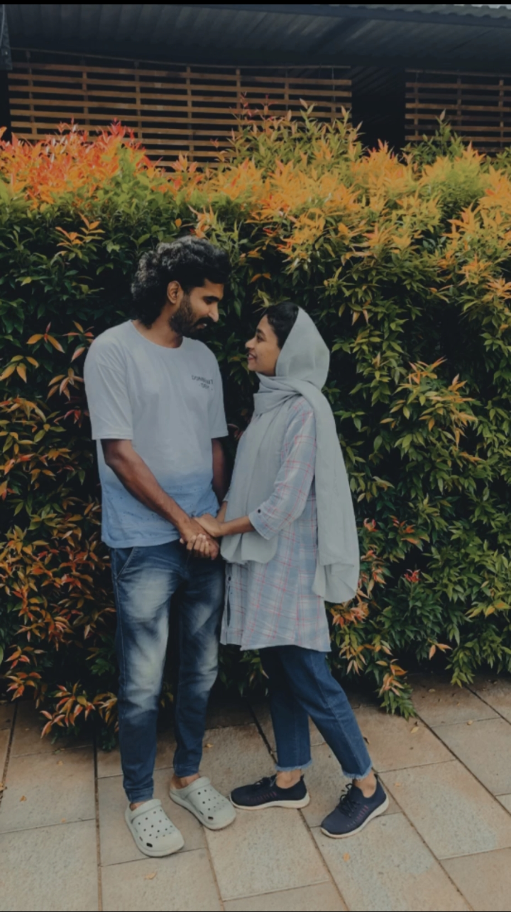

I
The way you look at me
Even in a room full of people, somehow, I still find home in your eyes.
TO THE ONE WHO FEELS LIKE HOME
Somehow, life keeps finding new ways to feel sweeter with you in it. I’d choose your hand to hold, your laugh to hear, and your heart to come home to—in every life, every time.
Happy anniversary, my love.
✧ LITTLE THINGS. BIG LOVE. ✧
Here are a few little pieces of my favorite everything.
Even in a room full of people, somehow, I still find home in your eyes.
Your hand reaching for mine. Your laugh from another room. My favourite ordinary moments.
Give me a thousand sunsets, as long as every single one is next to you.
Hand in hand, heart to heart—my favourite place will always be by your side.

VA thousand little moments, and somehow every one still gives me butterflies.
From our first forever to every tomorrow—we keep making the most beautiful memories.
SEALED WITH ALL MY LOVE
My darling,
You are still my favorite part of every day, the person I look for in every room, and the hand I want to hold through every season.
Thank you for every ordinary day you’ve made extraordinary just by being you. Whatever comes next, let it come. I’ll be right there beside you—still laughing at your jokes, still finding my way home in your arms, still falling for you.
All my love, for all our tomorrows.
Yours, always ♥